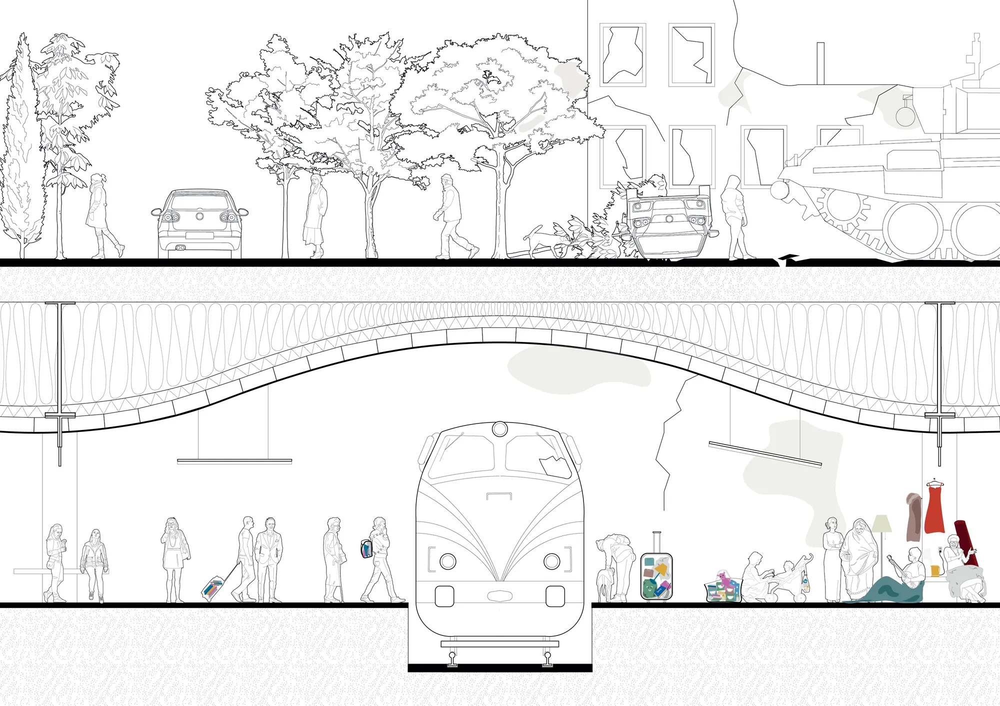
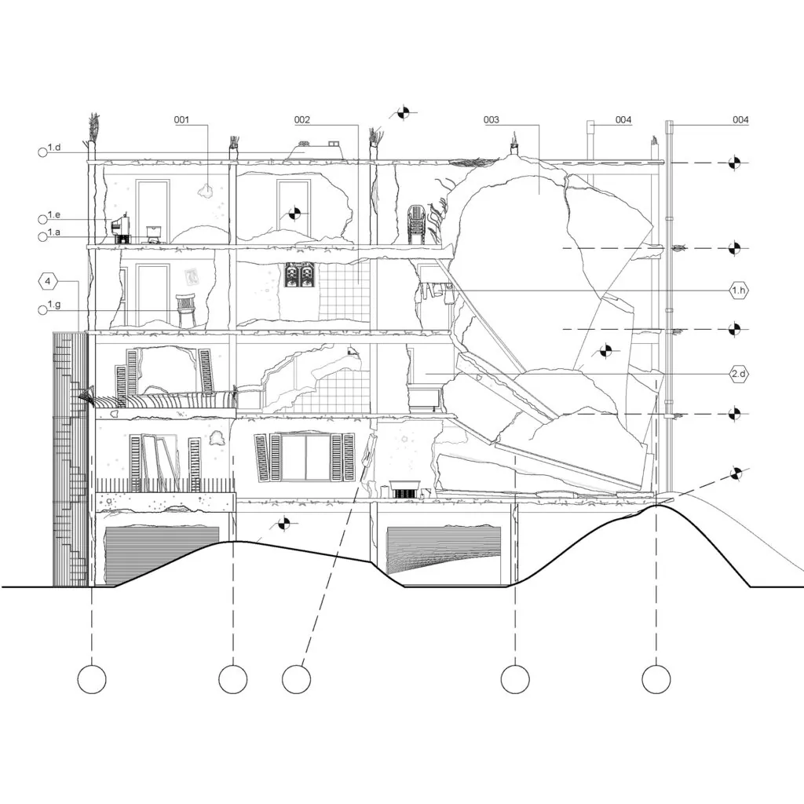

The Future of Home
A few months ago, three students, Saif Ragaei, Ammar Yasser and Mariam Ihab, interviewed by KooZA/rch, realised “how unstable the notion of normal life is by examining the situations where this sense of normalcy is destroyed in a horrific suddenness.” They questioned the fragility of our day to day in the face of political conflict and natural disasters and for the theme of the future of home they sent their contribution of technical drawings of destruction.

This bleak and dreary way of looking at the future, as seen by these three students, might have been still interpreted by some as overly dramatic and unnecessarily pessimistic about two or three months ago. In the end, the resourcefulness of Dutch technology as well as the innovative mindset our university works in solutions and has left no space for despair. Even the grimiest of scenarios are approached with an attitude full of action and feedback loops.
However, since the first day of the Russian invasion of Ukraine, the world, and especially our world of imaginative and very European academia, was shocked. It has been hard to accept for many, the uselessness of our field. How is this possible? They told us that we can save the world with architecture, and that urbanism can reshape our futures! It is uplifting to imagine a scenario where all are equal, no prejudice exists and we can all commute through a tube directly connected to our living rooms. But where in this discussion about the future do we include the people whose lives have been ripped apart?, asked Saif, Ammar and Mariam. Where are the people whose reality changed drastically and the effects of their trauma are about to continue to manifest over generations? A skewed and unintentionally ignorant point of view comes from lack of understanding what these exciting and utopian-like notions really entail. It comes from lack of empathy.
Ultimately, there are situations where no explanation, no plan and no solution can be found. Most extensive horrific acts in the recent decades have been happening at a safe distance from the European every-day and the reality of the "Western World", even though it seemed that peace was hanging on by a thread. But the sanctity of Home has been violated for many, and the images that come from the Ukrainian land leave us feeling robbed of our own humanity. And yet for us, here, they are still just images.
Destruction driven by sadistic cruelty and vague imperialistic nightmares ravages the walls of homes, and with the walls everything sacred falls brutally. Those who have the means, family and friends abroad or simply nothing else left to loose, flee their country, their life, and the remains of their homes. With all kinds of pets carried under their arms and hastily decided priorities in the suitcase these brave people march forward ready to build their sacred everything back again, even if wrecked in this new reality. Everything else is gone. The favourite chair fell broken and covered in the ashes that are left from the missiles hitting the floor slab. The bathtub, once an object of warmth and relief is now exposed to the street covered in broken pieces. And the TV, a source of entertainment and hope, shines its shattered screen, its wounded surface, to the sky with all the visions of prospect stubbornly silent.
Then, is the point of this article to raise awareness, to start innovating ideas with these complexities in mind? On the contrary, it is simply a plea for empathy, even a passive one, as without it there is no future of home, no future at all really. Empathy for what we do not know and do not understand, so that we can try to love, comprehend and validate experiences that are unimaginable. Sometimes, the transition from here to there is just as simple as recognising our own objects in those displaced far away from the sanctity of home.

In Netherlands you can support the Ukrainian people in need for example by donating goods, money or time to Students For Ukraine. @studentsforukraine_